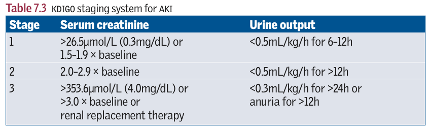

Acute kidney injury (AKI)
Background
Definition
- A rapid decline in renal function over hours or days, with an increase in serum creatinine level
- while the cutoff for rise in creatinine which qualifies as an “injury” is controversial, an increase of as little as 0.3 mg/dL may have clinical relevance, while traditional definitions describe a relative increase of 50% or an absolute increase of 0.5 to 1.0 mg/dL).
- The creatinine may be normal despite a markedly reduced glomerular filtration rate (GFR) in the early stages of acute kidney injury (AKI) due to the time it takes for creatinine to accumulate in the body. This condition is also called acute renal failure (ARF).
- 
- One consensus definition of AKI is called the RIFLE criteria.
- RISK: 1.5-fold increase in the serum creatinine or GFR decrease by 25% or urine output <0.5 mL/kg/hr for 6 hours.
- INJURY: Twofold increase in the serum creatinine or GFR decrease by 50% or urine output <0.5 mL/kg/hr for 12 hours.
- FAILURE: Threefold increase in the serum creatinine or GFR decrease by 75% or urine output of <0.5 mL/kg/hr for 24 hours, or anuria for 12 hours.
- LOSS: Complete loss of kidney function (i.e., requiring dialysis) for more than 4 weeks.
- ESRD: Complete loss of kidney function (i.e., requiring dialysis) for more than 3 months.
Approach


- AKI may be nonoliguric, oliguric, or anuric. Severe AKI may occur without a reduction in urine output (nonoliguric AKI).
- General goals of therapy are reversing the initial insult to the kidney and/or supportive care as GFR recovers, as well as preventing fulminant kidney failure requiring temporary or permanent hemodialysis.
- Weight gain and edema are most common findings in patients with AKI. This is due to a positive water and sodium (Na+) balance.
- Characterized by azotemia (elevated BUN and Cr)
- Elevated BUN is also seen with catabolic drugs (e.g., steroids), GI/soft tissue bleeding (due to RBC digestion and re-absorption of urea), and dietary protein intake.
- Elevated Cr is also seen with increased muscle breakdown and various drugs. The baseline Cr level varies proportionately with muscle mass.
Prognosis
- More than 80% of patients in whom AKI develops recover completely. However, prognosis varies widely depending on the severity of renal failure and other comorbidities.
- The older the patient and the more severe the insult, the lower is the likelihood of complete recovery.
- The most common cause of death is infection (75% of all deaths), followed by cardiorespiratory complications. Other nonfatal complications include chronic kidney injury and need for dialysis
- Life-threatening consequences
- volume overload
- hypoerkalaemia
- metabolic acidosis
- Risk factors: Diabetes, HTN, Elderly
Approach
- Prerenal failure
a. Most common cause of AKI; potentially reversible
b. Etiology
- (decrease in systemic arterial blood volume or renal perfusion leading to renal ischemia)—can complicate any disease that causes hypovolemia, low cardiac output, or systemic vasodilation
- Hypovolemia—dehydration, excessive diuretic use, poor fluid intake, vomiting, diarrhea, burns, hemorrhage, CHF, cardiorenal syndrome
- Hypotension (systolic BP below 90 mm Hg), from sepsis, excessive, antihypertensive medications, bleeding, dehydration
- Renal arterial obstruction (kidney is hypoperfused despite elevated blood pressure)
- Cirrhosis, hepatorenal syndrome
- In patients with decreased renal perfusion, NSAIDs (constrict afferent arteriole), ACE inhibitors (cause efferent arteriole vasodilation), and cyclosporin can precipitate prerenal failure.
Pathophysiology
- Renal blood flow decreases enough to lower the GFR, which leads to decreased clearance of metabolites (BUN, Cr, uremic toxins).
- Because the renal parenchyma is undamaged, tubular function (and therefore the concentrating ability) is preserved. Therefore, the kidney responds appropriately, conserving as much sodium and water as possible.
- This form of AKI is reversible on restoration of blood flow; but if hypoperfusion persists, ischemia results and can lead to acute tubular necrosis (ATN)
Clinical features
- signs of volume depletion (dry mucous membranes, hypotension, tachycardia, decreased tissue turgor, oliguria/anuria)
Diagnosis and Investigations
- Oliguria—always found in prerenal failure (this is to preserve volume)
- Increased BUN-to-serum Cr ratio (>20:1 is the classic ratio)—because kidney can reabsorb urea to increase sodium and water retention
- Increased urine osmolality (>500 mOsm/kg H2O)—because the kidney is able to appropriately reabsorb water
- Decreased urine Na+ (<20 mEq/L with fractional excretion of sodium [FENa] <1%) because Na+ is avidly reabsorbed
- Increased urine–plasma Cr ratio (>40:1)—because much of the filtrate is reabsorbed (but not the creatinine)
-
Bland urine sediment, indicating lack of significant cellular damage to glomeruli or tubules
-
Intrinsic renal failure
a. Kidney tissue (interstitium, glomeruli, tubules) is damaged such that glomerular filtration and tubular function are significantly impaired. Thus, kidneys are unable to concentrate urine effectively.
b. Causes
- Tubular disease (ATN)—can be caused by ischemia (most common cause), nephrotoxins (see Clinical Pearls 7-3 and 7-4)
- Glomerular disease (acute glomerulonephritis [GN])—for example,
- Goodpasture syndrome, granulomatosis with polyangiitis, poststreptococcal GN, lupus
- Vascular disease—for example, renal artery occlusion, TTP, HUS
- Interstitial disease—for example, allergic interstitial nephritis, often due to a hypersensitivity reaction to medication
c. Clinical features depend on the cause. Edema is usually present. Recovery may be possible but takes longer than in prerenal failure.
d. Laboratory findings
- Decreased BUN-to-serum Cr ratio (<20:1, typically closer to 10:1 ratio) in comparison with prerenal failure. Both BUN and Cr levels are still elevated, but less urea is reabsorbed than in prerenal failure as kidney is no longer actively reabsorbing it.
- Increased urine Na+ (>40 mEq/L with FENa > 2% to 3%)—because Na+ is poorly reabsorbed
- Decreased urine osmolality (<350 mOsm/kg H2O)—because renal water reabsorption is impaired
-
Decreased urine–plasma Cr ratio (<20:1)—because filtrate cannot be reabsorbed
-
Postrenal failure
a. Least common cause of AKI
b. Obstruction of any segment of the urinary tract (with intact kidney) causes increased tubular pressure (urine produced cannot be excreted), which leads to decreased GFR. Blood supply and renal parenchyma are intact. Note that both kidneys must be obstructed (e.g., prostatic enlargement) for creatinine to rise.
c. Renal function is restored if obstruction is relieved before the kidneys are damaged.
d. Postrenal obstruction, if untreated, can lead to ATN.
e. Causes
- Urethral obstruction secondary to enlarged prostate (BPH) is the most common cause
- Obstruction of solitary kidney
- Nephrolithiasis
- Obstructing neoplasm (bladder, cervix, prostate, and so on)
- Retroperitoneal fibrosis
- Ureteral obstruction is an uncommon cause because obstruction must be bilateral to cause renal failure.
Diagnosis
-
Blood tests
-
EUC, FBC, LFT, Coags, ESR, CRP, CK
- Unclear cause - consider GMs
- Serum IG, electrophoresis, C3/C4, ASOT, Autoantibodies (ANA, ANCA, anti-dsDNA, anti-GBM)
a. Elevation in BUN and Cr levels. Be aware that small changes in Cr may reflect a much more significant decrease in GFR.
b. Electrolytes (retention of K+, PO4 3−, drop in HCO3 − indicating acidosis, decrease in Na+ due to fluid retention)
c. Albumin levels to monitor for nephrotic syndrome
d. CBC with differential
- Urinalysis (Figure 7-2 and Table 7-2).
a. A dipstick test positive for protein (3+, 4+) suggests intrinsic renal failure due to glomerular insult.
b. Microscopic examination of the urine sediment:
- Crystals indicate presence of stones.
- Micro-organisms are seen in both infection and nonpathogenic colonization (differentiation made based on symptoms).
- Granular casts degeneration of cells and protein aggregates seen in ATN (“muddy brown” casts)
- Hyaline casts are devoid of contents (seen in prerenal failure).
- RBC casts indicate glomerular disease.
- WBC casts indicate renal parenchymal inflammation.
-
Fatty casts indicate nephrotic syndrome.
-
Urine chemistry—to distinguish between different forms of AKI.
a. Urine Na+, Cr, and osmolality: Urine Na+ depends on dietary intake.
b. FENa: collect urine and plasma electrolytes simultaneously = [(UNa )/(PNa )/(UCr)/PCr) × 100], where U = urine and P = plasma.
- Values below 1% suggest prerenal failure.
- Values above 2% to 3% suggest ATN.
- FENa is most useful if oliguria is present.
- If patient is on diuretics, UNa will be artificially elevated and fractional excretion of urea (FEUrea) must be used instead.
c. Renal failure index 5 (uNa/[uCr/pCr]) × 100)
- Values below 1% suggest prerenal failure.
-
Values above 1% suggest ATN.
-
Urine culture and sensitivities—if infection is suspected.
-
Renal ultrasound.
a. Primarily useful for evaluating kidney size and for excluding urinary tract obstruction (i.e., postrenal failure)—presence of bilateral hydronephrosis or hydroureter
b. Order for most patients with AKI—unless the cause of the AKI is obvious and is not postrenal
-
CT scan (abdomen and pelvis)—may be helpful in some cases; usually done if renal ultrasound shows an abnormality such as hydronephrosis
-
Renal biopsy—useful occasionally if there is suspicion of acute GN or acute allergic interstitial nephritis
-
Renal arteriography—to evaluate for possible renal artery occlusion; should be performed only if specific therapy will make a difference
-
CXR - pulmonary oedema
- ECG - hyperkalaemic changes
Complications
-
ECF volume expansion and resulting pulmonary edema—treat with a diuretic (furosemide)
-
Metabolic
a. Hyperkalemia—due to decreased excretion of K+ and the movement of potassium from ICF to ECF due to tissue destruction and acidosis
b. Metabolic acidosis (with increased anion gap)—due to decreased excretion of hydrogen ions; if severe (below 16 mEq/L), correct with sodium bicarbonate
c. Hypocalcemia—loss of ability to form active vitamin D and rapid development of PTH resistance d. Hyponatremia may occur if water intake is greater than body losses, or if a volume-depleted patient consumes excessive hypotonic solutions. (Hypernatremia may also be seen in hypovolemic states.)
e. Hyperphosphatemia—due to decreased clearance
f. Hyperuricemia
- Uremia—toxic end products of metabolism accumulate (especially from protein metabolism), leading to such complications as:
a. Platelet dysfunction
b. Immune dysfunction
c. Pericarditis
d. Encephalopathy
- Infection
a. A common and serious complication of AKI (occurs in 50% to 60% of cases). The cause is probably multifactorial, but uremia itself is thought to impair immune function.
b. Examples include pneumonia, UTI, wound infection, and sepsis.
Treatment
- General measures (see also Table 7-3).
a. Avoid medications that decrease renal blood flow (NSAIDs) and/or that are nephrotoxic (e.g., aminoglycosides, radiocontrast agents).
b. Adjust medication dosages for level of renal function.
c. Correct fluid imbalance.
- If volume depleted, give IV fluids. However, many patients with AKI are volume overloaded (especially if they are oliguric or anuric), so diuresis may be necessary IF SYMPTOMATIC
- The goal is to strike a balance between correcting volume deficits and avoiding volume overload (while maintaining adequate urine output). Remember that urine output is a reflection of renal blood flow (volume status) and GFR (kidney function).
- Monitor fluid balance by daily weight measurements (most accurate estimate) and intake–output records.
- Be sure to take into account the patient’s cardiac history when considering treatment options for fluid imbalances (i.e., do not give excessive fluid to a patient with CHF).
d. Correct electrolyte disturbances if present.
e. Optimize cardiac output. BP should be approximately 120 to 140/80 to 90.
f. Order dialysis if symptomatic uremia, intractable acidemia, hyperkalemia, or volume overload develop. Indications for urgent dialysis often remembered by “AEIOU” mnemonic: Acidosis, Electrolytes, Intoxications (such as in overdoses), volume Overload, Uremia.
- Prerenal
a. Treat the underlying disorder (such as hypovolemic or cardiogenic shock).
b. Give fluids to maintain euvolemia and restore blood pressure—do not give to patients with edema or ascites. May be necessary to stop antihypertensive medications. Remember that NS is often preferred unless acidemia is present (may worsen with hyperchloremia), in which case LR can be used. c. Eliminate any offending agents (ACE inhibitors, NSAIDs).
d. If patient is unstable, Swan–Ganz monitoring for accurate assessment of intravascular volume.
- Intrinsic
a. Once ATN develops, therapy is supportive and renal function generally recovers. Eliminate the cause/offending agent.
b. If oliguric, a trial of furosemide may help to increase urine flow. This improves fluid balance.
- Postrenal—a bladder catheter may be inserted to decompress the urinary tract. Consider urology consultation.
a. Be aware of the potential for post-obstructive diuresis and a rapid increase in urine output when obstruction is resolved, which may require IV fluid replacement.